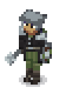
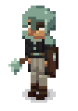
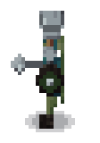
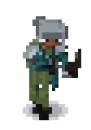

Rustlers' Chief
Rustlers' Chief is an elite of The Kindling Hills (level 15).
Rustlers' Chief is an elite of The Kindling Hills (level 15).
In the game
In the game the Rustlers' Chief is level 15, elite (a group's fight). It is found in The Shearing Downs. It can drop Chief's Drove-Axe (always), Rustler's Hood (25%) and Rustler's Mantle (25%).
Quests
Quests that ask for it: The Hidden Fold.
Gallery







